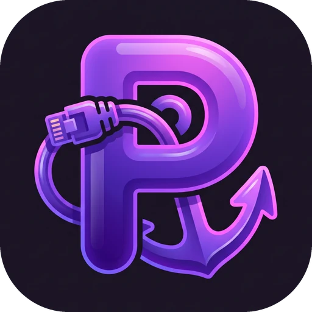
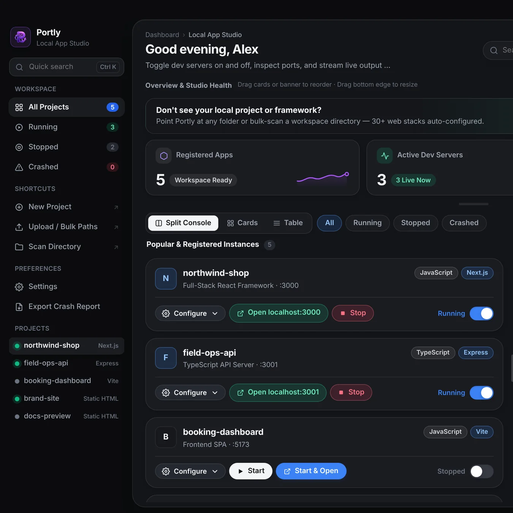

Portly, a free app for running local dev servers
Portly is a desktop app that we built for our own engineering work and released under the MIT license. It starts and stops the websites and dev servers on your computer from one window, where their live logs are also shown.
When a folder is added, Portly identifies the project and chooses its start command. The app runs on Windows, macOS and Linux, and it sends no data off your computer.
Free for personal and commercial use. No account is required.
What Portly does
Developers who run several projects at once often lose track of which terminal holds which server. Portly keeps every one of them in a single list.

-
01Start any project
Portly reads the folder you add and recognizes its framework. When two apps request the same port, it assigns a free one.
- One switch starts or stops each server
- Start and Open launches the site in your browser
- A whole workspace folder can be scanned at once
- Stopped servers release their ports
-
02Watch every server
Output from each server streams into the same window. Every project card shows its status, port and uptime.
- Live logs with filter and search
- A crash report that can be copied or filed
- Light and dark themes
-
03Run in the background
After the window closes, the servers continue to run from the system tray. A saved setup file moves the project list to another computer.
- Quick controls in the tray icon
- Export and import of the project list
- A guided repair for folders that have moved
More than 30 stacks, recognized on import
- Next.js
- React + Vite
- Astro
- Nuxt
- SvelteKit
- Angular
- Remix
- Express
- Fastify
- Bun
- Deno
- Django
- Flask
- FastAPI
- Streamlit
- Laravel
- Rails
- Jekyll
- Go
- Rust
- Java & Kotlin
- .NET
- Elixir
- Flutter Web
- Docker Compose
- Plain HTML
Control Portly from an AI coding agent
Portly includes an MCP server and a command-line client. Coding agents such as Claude Code and Codex can use them to start projects and read their logs, and an agent can also add a folder it has just cloned.
claude mcp add --scope user portly -- node /path/to/portly-mcp.jsThe connection stays on your computer. Agent commands reach Portly only through local channels, and no network port is opened for them.
Read the setup guide for each agentDownload Portly
Each release is published on GitHub with a SHA256SUMS.txt file for checking the download. The builds are not code-signed yet, so Windows and macOS ask for confirmation the first time Portly opens.
-
Recommended for your system
Windows installer
Adds a Start Menu shortcut and an uninstaller. Most Windows users should choose this file.
Portly-Setup-<version>-win-x64.exe Download from GitHub -
Recommended for your system
Windows portable
A single file that runs without installation, from the Downloads folder or a USB drive.
Portly-Portable-<version>-win-x64.exe Download from GitHub -
Recommended for your system
macOS
Open the disk image and move Portly to Applications. Builds are available for Apple Silicon and Intel.
Portly-<version>-mac-<arch>.dmg Download from GitHub -
Recommended for your system
Linux
An AppImage that runs on most distributions, with a .deb package for Debian and Ubuntu.
Portly-<version>-linux-x86_64.AppImage / .deb Download from GitHub -
Recommended for your system
Source edition
The complete MIT-licensed source with launchers for each system. It requires Node.js 18 or newer.
Portly-OpenSource-<version>-MultiOS.zip Browse the source
Seeing a security warning on first launch?
The warning appears because the builds are unsigned. It is expected for a new free app.
Windows: select More info, then Run anyway.
macOS: right-click Portly in Applications, choose Open and confirm.
Linux AppImage: make the file executable with chmod +x Portly-*.AppImage.
How can I check that a download is genuine?
Compare the file with the SHA256SUMS.txt file in the same release.
Windows: Get-FileHash .\Portly-Setup-*.exe
macOS: shasum -a 256 Portly-*.dmg
Linux: sha256sum -c SHA256SUMS.txt --ignore-missing
Get Portly running in five steps
No programming knowledge is needed to install Portly. The steps below take about five minutes.
-
01Download the file
Press the download button for your computer in the section above. The file is saved to your Downloads folder.
-
02Install Portly
Windows: double-click the Portly-Setup file. If a blue box says “Windows protected your PC”, select More info and then Run anyway.
Mac: open the .dmg file and drag Portly into the Applications folder.
-
03Open the app
On Windows, open the Start menu and type Portly. On a Mac, right-click Portly in Applications and choose Open the first time. The Portly window appears.
-
04Add your project
Select Add Project, then Browse, and choose the folder that holds your website or app. Portly reads the folder and enters the start command for you. Select Add Project again to save it.
-
05Press Start
Start runs the project. Start & Open runs it and opens it in your browser as well. Press Stop when the work is finished.
-
Before step 4
Portly runs each project with the tools that are already on the computer. A Node.js project needs Node.js, and a Python project needs Python.
Your projects stay on your computer
- Private
No telemetry
Portly has no accounts and no analytics. The project list and the logs are stored on your computer and nowhere else.
- Local
Closed to the web
The control panel answers only your own computer. Requests from websites open in your browser are refused.
- Open
Open source
The full source is on GitHub under the MIT license, and anyone can read it or build it.
Why we released Portly
Our engineers work on many client projects at once, and each project runs its own dev server. Portly began as the internal tool we used to keep track of them.
Other developers face the same problem, so the app is free and its source is public. The same team builds websites and apps for clients, including compliant storefronts.
Request inquiry access